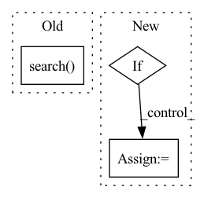

Pattern ID :15900
Before Change
"""
default_top = 50
encoded_query = self.encoder.encode([query])
top_n_results = self.field_index.search( encoded_query, default_top)
ids = top_n_results[1].tolist()[0]
similar_papers = self.sql_manager.get_by_multiple_ids(ids)
similar_papers_fnames = [similar_papers[elt]["fname"] for elt in similar_papers if similar_papers[elt]["messages"]]
return (similar_papers, similar_papers_fnames)After Change
elif query_type == 1: // OR operator
selected_papers, selected_papers_fnames = self.get_papers_with_OR_operator(query)
elif , selected_papers_fnames = self.get_papers_with_semantics(query)
return selected_papers, selected_papers_fnames
In pattern: SUPERPATTERN
Frequency: 3
Non-data size: 3
Instances Fragment ID: 53679986
Project Name: yassinekdi/naimai
Commit Name: 3d8d6db3c5e2790f11c16692a5201d6b321414fc
Time: 2022-08-03
Author: keptsa@yahoo.fr
File Name: pipelines/querier.py
M Class Name: Querier
N Class Name: Querier
M Method Name: get_all_similar_papers(3)
N Method Name: get_all_similar_papers(2)
M Parent Class:
N Parent Class:
M File Name: pipelines/querier.py
N File Name: pipelines/querier.py
M Start Line: 55
M End Line: 61
N Start Line: 116
N End Line: 137
Before Change
print(f"Downloading {url}.")
if re.search( "(\\.zip)|(\\.tar)", _suffix(url)) is None and extract:
warnings.warn(
"URL must be pointing to a `zip` file or a compressed `tar` file. "
"Automatic decompression is turned off. "After Change
if filename is not None:
assert not (Path(dst_dir) / filename).exists(), "file already exists"
print(f"Downloading {url}.")
if not is_compressed_file(url) and extract:
if filename is not None:
if not is_compressed_file(filename):
warnings.warn(
"filename is given, and it is not a `zip` file or a compressed `tar` file. "
"Automatic decompression is turned off."
)
extract = False
else:
pass
else: Fragment ID: 53680008
Project Name: deeppsp/torch_ecg
Commit Name: e50b00a6bcab52702af502827ddba080dd1e8eaa
Time: 2022-06-11
Author: wenh06@gmail.com
File Name: torch_ecg/utils/download.py
M Class Name: AnonimousClass
N Class Name: AnonimousClass
M Method Name: http_get(5)
N Method Name: http_get(4)
M Parent Class:
N Parent Class:
M File Name: torch_ecg/utils/download.py
N File Name: torch_ecg/utils/download.py
M Start Line: 56
M End Line: 100
N Start Line: 36
N End Line: 127
Before Change
cache_missed_entities = self.lookup_cache.check_lookup_cache([entity])
if not len(cache_missed_entities) == 0:
hits = list(
self.index_group.search(
query=result,
entity_class=entity.entity_class,
namespace=self.namespace(),
top_n=self.top_n,
score_cutoffs=self.score_cutoffs,
original_string=entity.match,
)
)
entity.hits.extend(hits)
self.lookup_cache.update_hits_lookup_cache(entity, hits)
After Change
indices_to_search = self.entity_class_to_indices.get(
entity.entity_class
)
if indices_to_search:
all_hits: List[Hit] = []
for index in indices_to_search:
all_hits.extend(index.search(result, self.top_n))
for hit in all_hits: Fragment ID: 53679999
Project Name: astrazeneca/kazu
Commit Name: 0d7573d82ab330ba148a39628c809c1d20621b3b
Time: 2022-11-30
Author: richard.jackson4@astrazeneca.com
File Name: kazu/steps/linking/sapbert.py
M Class Name: SapBertForEntityLinkingStep
N Class Name: SapBertForEntityLinkingStep
M Method Name: process_entities(2)
N Method Name: process_entities(2)
M Parent Class: BaseStep
N Parent Class: BaseStep
M File Name: kazu/steps/linking/sapbert.py
N File Name: kazu/steps/linking/sapbert.py
M Start Line: 162
M End Line: 173
N Start Line: 161
N End Line: 175